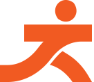

Domingo, até as 11h
Sion · Belo Horizonte
Escolha o seu ritmo
Vagas limitadas

Jita Kyoei · 自他共栄QUANDO UM
AVANÇA, TODOS
PROSPERAM.
Jita significa prosperidade e benefício mútuos: evoluir individualmente enquanto se contribui para o bem-estar de toda a comunidade.
É esse princípio do judô que encontra a corrida no Movimento Jita Run. Não haverá cronometragem oficial, pódio ou competição. O maior prêmio é se mover junto por uma causa que transforma vidas.
100%
da arrecadação líquida será destinada à manutenção do Instituto Projeto Judô Sara.
Seu movimento, seu ritmo
DUAS FORMAS DE
DUAS FORMAS DE
FAZER PARTE.
O trajeto será feito em voltas de 1,5 km pela Avenida dos Bandeirantes.
Quatro voltas para quem quer se desafiar, manter o ritmo e transformar esforço em impacto.
4 voltasParticipativo
Duas voltas para famílias, iniciantes e todos que desejam se movimentar pela causa.
2 voltasTodas as idades
Sem pressão, com propósito. O evento é exclusivamente participativo, sem ranking, pódio ou troféus por categoria e tempo.
22 de novembro
UMA MANHÃ
Até a concentração, às 8h.
UMA MANHÃ
PARA MOVER.
Chegue com antecedência e aproveite cada etapa desse encontro entre esporte, saúde e solidariedade.
—dias
—horas
—min
- Boas-vindasConcentração e treino funcional
- MovimentoLargada da corrida e caminhada
- CelebraçãoConfraternização e entrega de medalhas
- Até a próximaEncerramento do evento
600+crianças e adolescentes
Impacto social
CADA PASSADA
CADA PASSADA
PLANTA UMA SEMENTE.
O Instituto Projeto Judô Sara acolhe mensalmente crianças e adolescentes em situação de vulnerabilidade em Belo Horizonte, promovendo formação cidadã e inclusão social por meio do judô e do esporte.
Antes da largada
INFORMAÇÕES
INFORMAÇÕES
IMPORTANTES.
Ingresso individual pelo Sympla. Vagas limitadas.
O local de retirada será divulgado pela organização.
Corrida e caminhada pensadas para diferentes ritmos e idades.
Ponto de encontro
PARQUE MUNICIPAL
PARQUE MUNICIPAL
JUSCELINO KUBITSCHEK.
Avenida dos Bandeirantes, 240
Sion · Belo Horizonte/MG
CORRA POR VOCÊ.
MOVA-SE POR TODOS.
Faça parte de uma corrente em que saúde, esporte e solidariedade seguem na mesma direção.
Inscreva-se pela Sympla